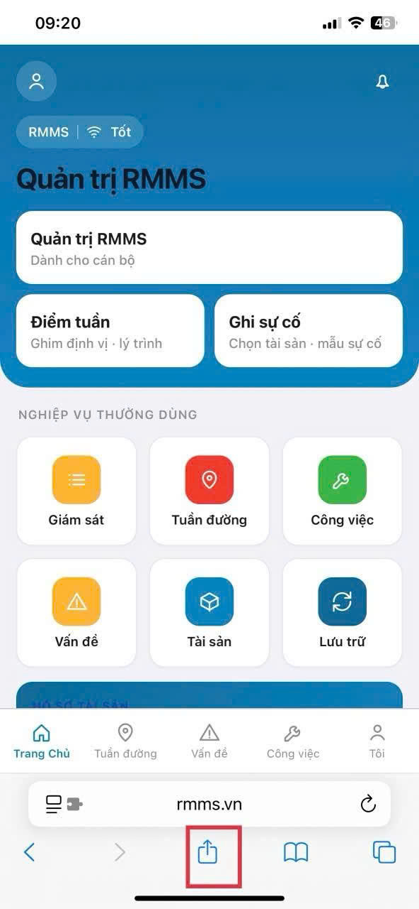
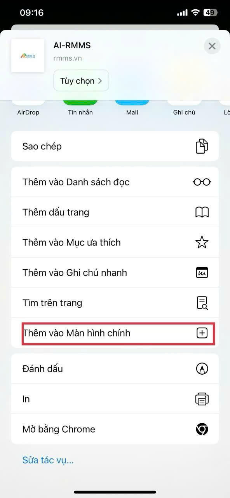
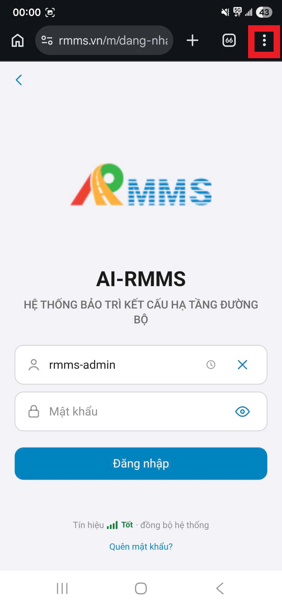
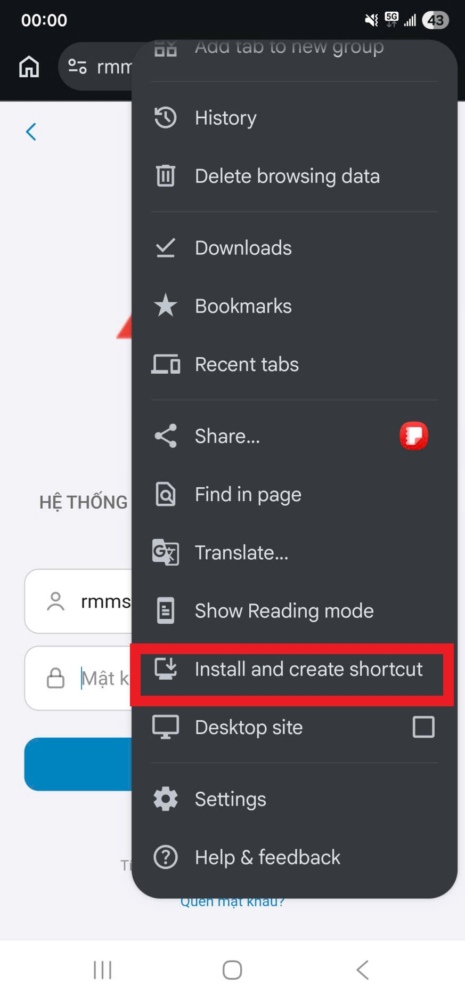
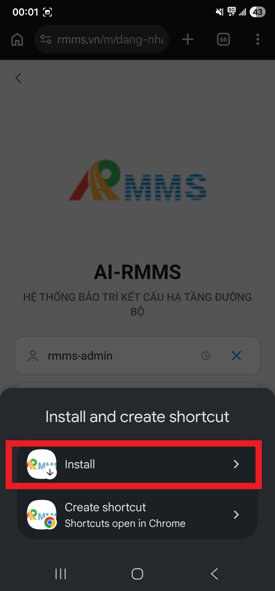

1Mở Safari. Vào https://rmms.vn/m. Đăng nhập bằng tài khoản được cấp.
2Nhấn nút Chia sẻ ở giữa thanh dưới: hình vuông có mũi tên hướng lên.

RMMS mở bằng trình duyệt, rồi ghim ra màn hình chính để vào như một ứng dụng. Địa chỉ: https://rmms.vn/m.
Sau khi có biểu tượng, thao tác tuần đường, tuần kiểm và nghiệm thu: Hướng dẫn thao tác.
1Mở Safari. Vào https://rmms.vn/m. Đăng nhập bằng tài khoản được cấp.
2Nhấn nút Chia sẻ ở giữa thanh dưới: hình vuông có mũi tên hướng lên.

3Kéo danh sách, chọn Thêm vào Màn hình chính.
4Giữ tên AI-RMMS, nhấn Thêm. Biểu tượng xuất hiện trên màn hình chính. Lần sau mở từ biểu tượng này.

1Mở Chrome. Vào https://rmms.vn/m.
2Nhấn nút ba chấm ở góc trên bên phải.

3Chọn Install and create shortcut (Cài đặt và tạo lối tắt).

4Chọn Install. Không chọn Create shortcut nếu muốn mở độc lập, không mở trong thẻ Chrome.
5Xác nhận cài. Biểu tượng AI-RMMS nằm trên màn hình chính. Mở biểu tượng, đăng nhập bằng tài khoản được cấp.
